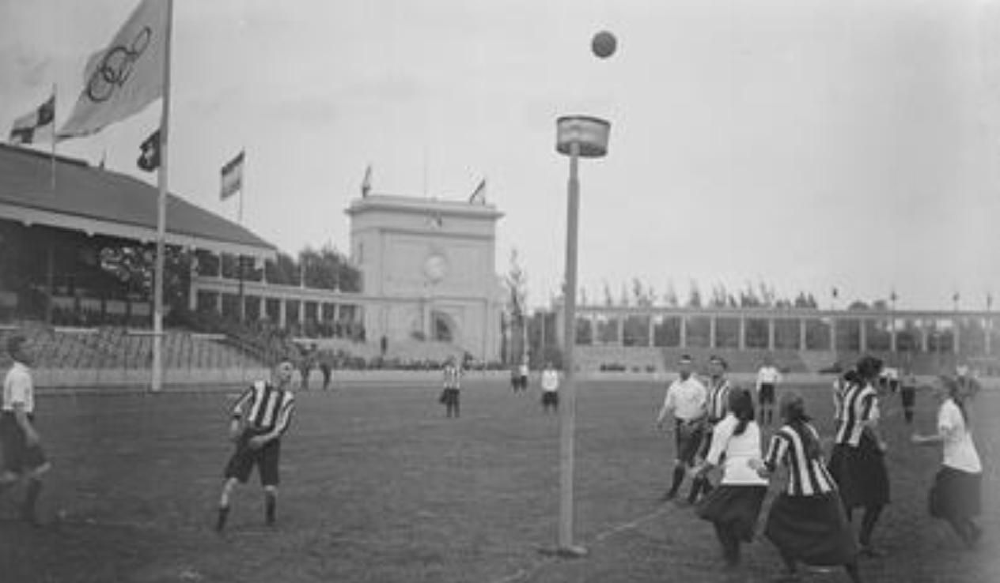

Su origen se remonta a principio de siglo, cuando Nicolas Broekhuysen profesor de educación física holandés, viajó a Suecia a un seminario y al salir vio un grupo de jóvenes que jugaban de forma mixta a algo que se conocía como balón-aro, con el objetivo de embocar una pelota. A partir de allí, decidió aplicar sus propias reglas al juego, en el que cambió el aro por un cesto y lo denominó como Korfball, ya que korf significa cesto en holandés.
El juego se presentó en 1902 y tuvo éxito, tal es así que en 1905 se formó la primera Asociación Nacional en Ámsterdam. La presentación internacional fue como deporte exhibición en los juegos olímpicos de 1920 y 1928.
La aceptación mundial progresaba lentamente hasta que comenzó su expansión después de la segunda guerra mundial.
Según los portales web, la causa del lento desarrollo puede deberse a la separación de hombres y mujeres en actividades deportivas competitivas.
Actualmente se registra un crecimiento significativo, jugándose en casi 70 países, se pretende que forme parte de los Juegos Olímpicos del año 2028.
